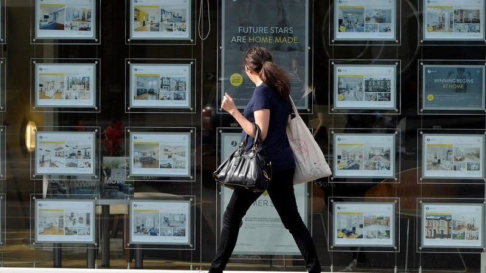

No Homes for The Young? How young people are unable to afford a home in London due to the housing crisis
Harrison Marshall, a 28-year-old architect, moved into an 8-square-metre skip house in Bermondsey, South East London, at the end of last year as part of a public art project to “highlight the housing crisis being faced by the community.”
It all started when he moved back to London in 2022 after spending a few years living abroad and needed to find a place to live, but prices were “through the roof.”
The skip house is located on an empty plot of land in Bermondsey, which is owned by Antepavilion, an arts and architecture charity. Inside the house, there is a small living space and a mezzanine shelf for his bed. Below the bed, there’s a small kitchen comprised of just a sink and space for a cooktop, but there’s no bathroom. Instead, there is a portable toilet outside, and Marshall showers at his work or the gym.
“I wanted to hammer home the realities of the rental situation in London by creating something that could be considered better than many of the rooms on offer around London, even though it was in a dumpster”, Marshall says.
Marshall is one of many young people who can’t afford to rent a place to live in London, let alone buy a house. Owning a home is the biggest investment most people will make in their lives and will usually be one of the largest assets an individual owns. Most Britons aspire to owning their own home, as revealed in a study by Santander in 2019, with nine out of ten young Britons, aged 18 to 34, stating that they aspire to own a home, with half of them putting it as their biggest goal.
Harrison Marshall and his skip house in Bermondsey, South East London. Photo credit: Harrison Marshall/Skip house
Inside the skip house. Photo credit: Harrison Marshall/Skip house
Inside the skip house. Photo credit: Harrison Marshall/Skip house
However, for many young people in London the prospect of one day owning their own home has become a very distant dream, with house prices having risen faster than wages in recent decades. In the 1980s and 1990s, the average full-time worker could expect to pay about three times their annual earnings to buy a home in England. By 2022, this increased to more than eight times their annual wages. In London, the situation is even worse, with a normal worker now needing to save thirteen times their annual income in order to purchase a house.
House price to income ratio in England and London from 1983-2022
Source: ONS
Vicky Spratt, housing correspondent of the i newspaper, and author of the book Tenants, states: “Saying housing crisis is being generous; it is a humanitarian emergency”, adding that every government since the 1980s has failed to do anything about the housing crisis, as the situation has gotten worse and worse.
She further explains that younger people are experiencing rising interest rates at the moment, which could make their mortgages more expensive and, potentially, unaffordable. Meanwhile, the money working-age people take home after tax is being squeezed by high inflation.
Vicky Spratt, housing correspondent of the i newspaper, and author of the book Tenants/Photo credit: Vicky Spratt
“Saying housing crisis is being generous; it is a humanitarian emergency.”
Vicky Spratt, housing correspondent of the i newspaper
The Bank of England raised interest rates for the 13th consecutive time last month to 5 percent, the highest level since 2008, in response to the high inflation. As a consequence, more than 1.4 million households across Britain are expected to lose at least 20 percent of their disposable income, as highlighted by the Institute for Fiscal Studies (IFS) in their latest report.
The IFS also warns that the heaviest blow would be reserved for those under the age of 40 with larger mortgages, with the biggest financial hit for households in London and the South East of England.
With mortgage costs at a record high and the soaring cost of living crisis, being able to save up enough to buy a house for young people seems unrealistic; but it hasn’t always been this way. What, specifically, has gone wrong in the housing sector that has made it get worse in England, particularly in London, over the last few decades?
History of the housing crisis in England
1919
In 1919, the UK Parliament passed the Housing Act which promised government subsidies to help finance the construction of council houses across the country. Further Acts during the 20s and 30s extended the duty of local councils to make housing available as a social service. As a consequence, local councils built a total of 1.1 million homes.
1970s
At the start of the 1970s, local governments and housing associations provided about a third of the homes in the United Kingdom. Things were starting to change in the next few decades.
1980
The introduction of the ‘Right to Buy’ under the Housing Act 1980 started to fuel the housing crisis. It allowed council house tenants to buy the homes they lived in and forced local authorities to sell their properties on request at a discount. Nationally, 1 million houses were sold within 10 years.
1980s-1990s
At the same time as council housing stock was diminishing, mortgages – including those for landlords – were made more widely available, fuelling rising house prices.
The excessive demand for housing as a financial asset, rather than as a place to live, has been the main challenge facing the UK housing market since the 1990s.
1996
The Buy to let mortgage scheme enabled people who already owned homes to buy second homes to let out as rental investments.
2000s
Over the next two decades falling interest rates and rising house prices persuaded more and more people that the property market was a good place to invest. In the 2000s, an average of 200,000 buy-to-let mortgages were approved per year. Not only did this expand the rental market but it was another element driving house prices up.
2008
The global financial crisis led to a severe tightening of credit conditions. Banks stopped lending as freely, and people found it harder to get mortgages. This, in turn, led to a sharp decline in property prices, as buyers dried up and sellers struggled to offload their properties. From 2008 to 2009, property prices fell by 15 percent in England and 20 percent in London.
2013
The housing market struggled after the 2008 crisis; then the government made a dramatic intervention to get the housing market moving with the launch of Help to buy scheme that enabled first-time buyers to purchase a property with a 5 percent deposit and access an equity loan from the government worth up to 40 percent of the property, paid back interest-free for five years. But Office for Budget Responsibility members said mortgage subsidies would push up prices and have little impact on demand.
2020
The housing market went into lockdown in March, 2020, due to the global pandemic. The UK government introduced the stamp duty holiday in July 2020 to boost the property market during the pandemic. Despite the disruption in most areas of the economy, house prices in England climbed by 8.5 percent during 2020, according to the ONS. The price rise was partly fuelled by a rush to buy during the stamp duty holiday.
2022-2023
The Bank of England raised interest rates for the 13th consecutive time to 5 percent in June 2023, the highest level since 2008, in response to the high inflation. As a consequence, the cost of a two-year fixed-rate mortgage in the country rose above 6 per cent, piling pressure on homeowners.
Chapter 1:
Home ownership: a far-off dream for the young?
The chance of a young adult owning a home in England has dropped dramatically over the past two decades, from almost 60 percent of 25–34-year-old owning their home in 2003 to 40 percent in 2022, according to the English Housing Survey 2022.
Trend in housing tenure for the age group 25-34 in England from 2003-2022
Source: English Housing Survey 2022
Home ownership percentage for the age group 25-34 per region in England in 2021
Source: Census 2021
At a regional level, London has the lowest level of home ownership among young people, with only 27 percent of those aged 25 to 34 owning a home, far below any other region in England.
Furthermore, the average age of first-time buyers has increased over the years across the country, from 31 in 2003/04 to 33 in 2021/22. In London, the average age of first-time buyers was higher than the rest of the country during the timeline, increasing from 32 in 2003 to 37 in 2019. It did drop, however, to 34 in 2022 after the COVID-19 pandemic. This suggests that young people in London have to save for a house deposit for a longer period now than in the past, and also for longer time than their peers in the rest of the country.
Average age of first-time home buyers in London and England excluding London in 2003-2022
Source: English Housing Survey
Hugo Owen, a communications executive of Pocket Living, an innovative housing developer, says: “For my generation, as I am 29, it's very unlikely that I'll ever buy a home, certainly not in London. The average deposit now is £150,000.”
He further adds: “There's certainly no way any normal young person will be able to afford that unless they have support from their mum and dad.”
“We're getting to a point where the younger generations can't even get themselves on the housing ladder, let alone potentially helping their future children onto the property market”, Owen says.
Hugo Owen, communications executive of Pocket Living/Photo credit: Pocket Living
Young people are disproportionately affected by the housing crisis in London. As house prices rise faster than wages and the social housing stock remains in short supply, growing numbers of young people are being pushed into the private rental sector in London. In this economy, it is even harder for them to save money for a house deposit.
In 2021, young adults between 25 and 34 years old account for the highest proportion in the private rental sector in comparison with any other age group within London. Not surprisingly, outright owners were concentrated among the older age bands, 50 and over, while mortgagors were typically in the middle age bands, 35-to-49-year-olds.
Distribution of tenure types by age group in London in 2021
Source: Census 2021
Experts warn that whilst renting privately can offer flexibility, it can also come with challenges, including a lack of affordability, especially for those young people hoping to save for a deposit on a house; poor living conditions; and housing insecurity due to common short-term tenancy agreements.
Chapter 2:
What stops the younger generations from getting on the property ladder?
Some people believe that cutting out Netflix subscriptions, Starbucks, and take-away food will help young people save for a house deposit. However, to accumulate enough savings for a mortgage, one would need to abstain from Netflix subscriptions for over 200 years or stop drinking Starbucks every day for the next 100 years, in order to save for an average £100,000 deposit for a house in London.
According to the ONS, the average house price is 58 times higher than it was in the 1970s, yet the price of other products has only increased by five to ten times.
Nishan Hussain, a coordinator of the rough sleeping support programme at Brent London Borough Council, and housing consultant at Hertfordshire County Council, says the main reason behind the housing crisis that the young are now facing is that salaries are not going up in line with house prices.
"The cost of living and inflation are sky-high; interest rates and mortgage repayments are extremely unaffordable in those circumstances. How do you expect a young person to get on the property ladder?", she questions.
Another problem is the affordability test for mortgages, according to Hussain. With the high cost of living, there are very few chances for many young people to pass that test in order to borrow from the bank.
Nick Gallent, professor of housing and planning at UCL/Photo credit: Nick Gallent
Meanwhile, Nick Gallent, professor of housing and planning at University College London (UCL), explains that housing has become an investment vehicle in London, with its position as a global city, which has driven the demand side beyond the supply, pushing house prices out of reach for many young people.
He further adds that London’s housing problems are also rooted in unequal distribution and inequality in access to the housing resource, which is concentrated in the hands of investors and older generations.
“London is getting to a point where there are plenty of expensive flats for investors and really nothing that people on ordinary incomes can afford”, states Gallent.
He also highlights that for the younger generations, who are at an earlier stage of career development in a rising market where wages are stagnating and asset prices are growing, the younger they are, the more disadvantaged they will be.
The UCL professor warns that some of the current programmes to assist young people in obtaining housing, such as the deposit-free or help to buy, don't actually help to address the enduring issues in the housing system because "they're not concerned with the fundamental question of the relationship between earnings and house prices."
He explains that those programmes will encourage more cash flow into the housing market, which could potentially push prices up.
"We're at a point of a difficult dynamic at the moment because everything is sort of locked; the whole system is locked. House prices are teetering, but they're not dropping substantially. Rents are increasing as landlords try to recover the costs as a result of rising interest rates and falling tax relief. Meanwhile, homeowners are struggling with higher mortgage costs. In the end, nobody's happy", he says.
For the younger generations, who are at an earlier stage of career development in a rising market where wages are stagnating and asset prices are growing, the younger they are, the more disadvantaged they will be.
Nick Gallent, professor of housing and planning at UCL
Rising house prices in the last two decades have exacerbated intergenerational inequality by advantaging wealthy older homeowners who purchased houses at a low price and benefited from the cheap mortgages. It has also worsened wealth inequality by restricting the privilege of home ownership to those with wealthy parents.
Jonathan Bayley, a 29-year-old teacher, is among those lucky people who can afford to live in a house in Southwark, South East London. His mother bought the property at a low price in the 1990s, and now its value has increased more than 10 times to over £1,000,000.
"Unless you are fortunate enough to have somewhere to live here, maybe through relatives, then renting is incredibly expensive, and buying a house sounds impossible unless you have help with a deposit", he says.
"Before the interest rates went up last year, you just needed to try to save for a deposit, as the interest rates were relatively low. But now, even if you manage to pay for a deposit, you still need to spend a fair amount of money to pay for mortgage”, states Bayley.
Jonathan Bayley, 29-year-old teacher/Photo credit: Duong Bui
He further adds: “It doesn’t seem like a sustainable option to live here because the mortgage cost is really high. The housing situation in England is awful, unsustainable, and impoverishing, but in London, it’s obviously much worse.”
Chapter 3:
The young victims of London’s housing crisis
A report from Metropolitan Thames Valley Housing (MTVH) in 2022 pointed out that poor housing prospects are harming young people's mental health and influencing their life decisions in England. Around 78 percent of people surveyed said that uncertainty about their future living situation affects the decisions they make, such as the jobs they will apply for (47 percent) and whether to start a family (34 percent).
In the survey conducted by MTVH, with 2,047 young adults between 18 and 34 years old across the country, it reveals that young people in London and the East of England are the most likely to say that they were worried about being able to start a family due to their future housing situation.
“Having a home can be the catalyst for so many things in life - starting a family, doing well at work, putting down roots and contributing to your community.”
“Yet, as we have heard from young people from across the country, there is real concern that the homes and futures they aspire to feel out of reach.”
Geeta Nanda, chief executive of MTVH

More than one in four London families has at least one adult child in the house, the largest proportion of any English region, as more young adults are unable to afford their own home, ONS figures reveal/Photo credit: Unsplash.
Moreover, the housing officer Hussain states that, among the younger generations, nowhere is the housing crisis more acutely felt than here in London, and thousands of people have suffered from it.
"It obviously has an impact on mental health. People are suffering from severe mental health issues, and it's affecting their lifestyle and career prospects. Many young professionals with housing problems are having to give up work because they can't deal with it. They're stressed and depressed," she says.
"As a part of a safeguarding team in Brent Council, I often get calls from young people who say they can't afford the housing costs anymore. They are getting really distressed. They’ve got no will to live, and they just feel like giving up."
Recently, she has witnessed two suicide cases related to housing issues.
"This is a major concern; a sign to say that people can't deal with this problem anymore."
Nishan Hussain, housing officer
Matias Wood, a 26-year-old actor, is struggling to find a place to live in South West London. Disappointed and tired, he has been hunting for an apartment for the last six months whilst staying on a sofa in his friend’s house in Sutton, South London.
He says he raised his budget from £700 to £800 per month for renting a small room, but he has had no luck so far. "The properties that are sort of within my price range just look very unlivable. I've looked around a few of them, and they're just covered in mould or have broken things."
Wood says: "I don't know how people manage to get a job where they can earn enough money to spend thousands on rent or pay for a mortgage. I usually spend more than half of my earnings on rent, and on top of that, I still need to pay bills and transportation”.
“At the end of the day, I don’t have any money to save. There's no way of growing your wealth in London, especially for young people without family support”, he further adds.
He left his home when he was 16 to pursue an acting career in London, and since then he has had many different jobs, but it is never enough to pay for the living costs in the city.
"It's so frustrating because I don't even agree that this is how society should be. I don't think it should be only about money, wealth, and making profit. I think it should be about caring for each other and making sure that everyone else is okay", remarks Wood.
As London's rents and house prices continue their rapid rise, more people are choosing to live on a boat because it is a more affordable option/Photo credit: Unsplash.
For Anna, who asked not to reveal her real name, a master’s student in Environmental Humanities in London, living in a boat is the alternative to buying a house or renting amid the rising cost of living crisis.
"Cruising the boat is like having a part-time job, as it normally takes me the whole day to do it. I need to get water, empty my toilet, and get engine maintenance. I need to balance that with working and studying", she says.
She bought her boat for £5,000 in 2022, and she doesn’t pay for mooring fees or other costs except the boat licence as she continues cruising and moving across the canal system in West London.
"There are so many challenges to living on a boat, but it gives me the option to stay in London that I couldn’t afford otherwise", she admits.
"I don’t think I will ever be able to buy a house, and it is not something that I am aspiring to do. I would get a nicer boat, which I can invest in and convert into my home", says Anna.
Chapter 4:
How can we fix the broken housing market for the younger generations?
Pocket Living, among other affordable housing developers, has launched initiatives to help young Londoners buy their first home at prices at least 20 percent below market value.
Owen, Pocket’s communications officer, explains: “We started by creating affordable Pocket homes with a compact design exclusively for local first-time buyers, allowing those on lower incomes a way to get their foot on the housing ladder and own a piece of the city they love.”
The company has three developments in Barnet, Croydon and Waltham Forest, and plans to expand to 65 percent of the boroughs in London, he says.
He expects that the UK government will have more schemes to facilitate small and medium sized developers like Pocket, contributing to housing supply, adding that that many small sites in London can deliver thousands of homes for people with needs.
Pocket development in Croydon, South London/Photo credit: Pocket Living.
Pocket development in Waltham Forest, North East London/Photo credit: Pocket Living.
Pocket development in Woodside Park, North London/Photo credit: Pocket Living.
Interior of one-bedroom-apartment in Pocket development/Photo credit: Pocket Living.
Interior of one-bedroom-apartment in Pocket development/Photo credit: Pocket Living.
Interior of one-bedroom-apartment in Pocket development/Photo credit: Pocket Living.
Meanwhile, Centrepoint, the youth homelessness charity, started the Independent Living Programme in 2017 to deliver affordable accommodation to young people, with rent below one-third of their monthly income.
The 21-square-metre flats provided by Centrepoint have a kitchen, dining area, bathroom, bed and a space to relax in. The purpose-built modular homes are the first affordable dwellings to be specifically built to help people at risk of homelessness, as schemes like this usually use refurbished housing, according to Centrepoint.
Interior of a studio flat provided by Centrepoint/Photo credit: Centrepoint.
Even though these programmes have helped thousands of young Londoners survive the cost-of-living crisis, there is still an urgent need to fix the broken housing market that has left a large number of young people in the capital city that live in poor housing conditions and are unable to buy their own home.
Professor Gallent says: "Housing unaffordability is a massive barrier to labour mobility and labour supply, and it's going to adversely affect the foundational economy of big cities, like London, where they need more than their in-situ population to drive their economy."
Building more affordable houses is one way to solve the problem, as suggested by many experts and researchers, but another solution, in Gallent’s opinion, is the introduction of land value or property tax, as well as capital gains tax (on the value-uplift of a property from point of purchase to point of sale), which are not charged on a principal home.
"The government perhaps should bring the taxation of housing into line with other assets, discouraging over-investment in the housing market in London", he further adds.
At a local level, Hussain suggests that the UK government should give more funding to local authorities for affordable housing and develop policies to encourage housing associations, as well as focus on investing in the community rather than the private sector.
"The government should invest in and prioritise the community’s living conditions, health, and wellbeing because people are suffering massively as a result of it", she says.
Inside the skip house in Bermondsey, South East London. Photo credit: Harrison Marshall/Skip house
Marshall, the owner of the skip house, describes what it's like to live in a dumpster, saying that the Old Kent Road traffic wakes him up every day and that he doesn't have running water; instead, he gets it from his neighbours, filling up a bucket every day to cook and wash his plates.
"It seems crazy that people work in the city and can’t afford to live here, or people who have lived here their whole lives can’t afford to stay here, so they’re having to move out", he says, further adding: “No one should have to live in a skip.”
As his story has gone viral on social media and appeared in various newspapers, Marshall is hoping to ignite a conversation around housing and how wasteland is used. "There’s got to be more creative solutions to the housing crisis," he states.
London needs to deliver more affordable homes for young people, who contribute to their city in so many ways, if it is to remain the vibrant, cosmopolitan, and creative centre we know it to be.